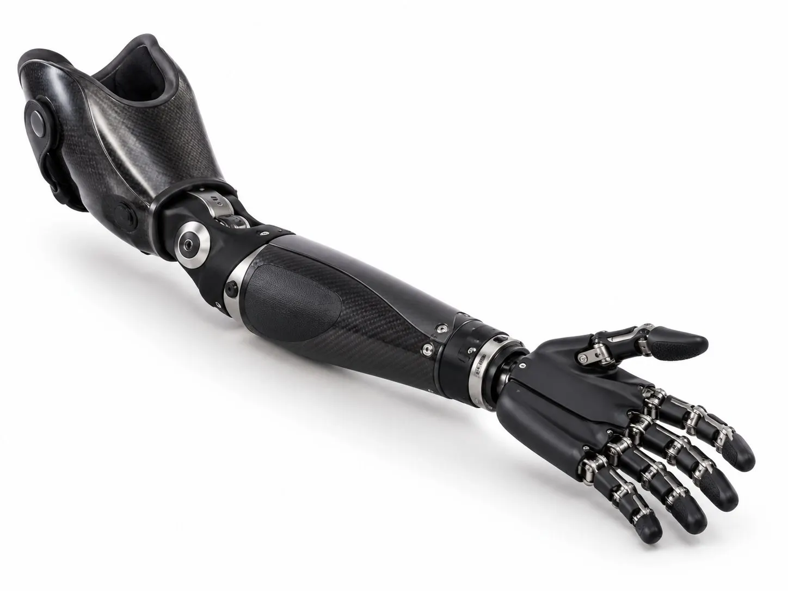

What is an upper limb prosthesis?
An upper limb prosthesis is an artificial arm, hand or part of a hand. People need one after an accident, an illness or because they were born without part of an arm.
Losing part of an arm affects small things you do all day, like holding a cup, carrying a bag or tying your shoes. A good prosthesis won’t replace your hand completely. But it can make many of these tasks easier and help with balance and posture too.
Levels we work with
The design of your arm depends on where the limb loss is:
- Partial hand. Some fingers or part of the hand are missing.
- Below elbow. Your own elbow still works, which gives you good control.
- Above elbow. The prosthesis also needs an elbow joint.
We’ll check your limb, your skin, your strength and your range of movement before we suggest anything.
Types of prosthetic arms
Passive arms and hands
A passive prosthesis looks like a natural arm or hand but doesn’t have moving parts you control. It’s light and comfortable. It helps with balance, holding paper flat, steadying objects and carrying light things. Some people choose it simply because they prefer how it looks.
Body-powered arms
A body-powered arm uses a harness across your shoulders and a cable. Moving your shoulder opens or closes a hook or hand. These arms are strong and reliable, and they give you a sense of how hard you’re gripping through the pull of the cable. Many people use them for work and heavy daily tasks.
Advanced and electric options
Electric (myoelectric) hands are moved by signals from your own arm muscles. They can look very natural and don’t need a harness. They also cost more, need charging and need more care. We’ll talk honestly about whether this type would suit your goals and budget.
Choosing the right arm for you
There’s no single “best” prosthetic arm. The right one depends on:
- What you want to do with it (work, cooking, driving, sport, school)
- How much your limb can move and how strong it is
- How easy it is for you to put on and look after
- Your budget and how easy it is to get repairs
Many people end up using more than one type for different jobs. That’s completely normal.
How the fitting works
- Assessment. We talk about your daily tasks and check your limb.
- Casting or measuring. We take the shape of your limb for the socket.
- Test fitting. You try a test socket so we can adjust comfort and control.
- Final arm. We fit the finished arm and set up the hand or hook.
- Training. We practise real tasks with you, like holding, carrying and dressing.
- Follow-up. We check how it’s going and fine-tune things.
Living with your prosthetic arm
Start with short periods and build up. Keep your skin clean and dry, and check it daily for red marks. If you have a body-powered arm, check the cable for fraying. If you have an electric hand, charge it every night.
Most of all, give yourself time. Learning a new way to use your hands takes practice. Our team is here to help when something feels hard. If you’d like to know what happens at a first appointment, read how to prepare for your first visit.

What we offer
- Partial hand, below-elbow and above-elbow levels
- Passive (natural-looking) arms and hands
- Body-powered arms with a hook or hand
- Advice on advanced and electric options
- Training for everyday tasks
Common questions about Upper Limb Prosthetics
A body-powered arm uses a harness and cable. When you move your shoulder, the cable opens or closes the hook or hand. It's strong, simple and easy to repair.
A myoelectric arm uses small sensors that pick up signals from the muscles in your arm. A motor then moves the hand. It needs charging and more care, and it isn't the right choice for everyone.
No. A prosthetic hand can't feel touch or temperature the way your own hand does. Most people learn to use their eyes to guide it, and many find it gets easier with practice.
It depends on the type. Passive and body-powered arms are usually lighter. Electric arms are heavier because of the motor and battery. A well-fitting socket makes the weight feel easier to carry.
Yes. Children often start with a simple design and move on as they grow and learn new skills. They will need regular checks and new sockets as they get bigger.
Simple tasks can come quickly, but most people need a few weeks of regular practice to feel confident. We'll show you exercises and everyday tasks to practise at home.
This page gives general information only. It isn't medical advice. Please talk to your doctor or our team about your own needs.